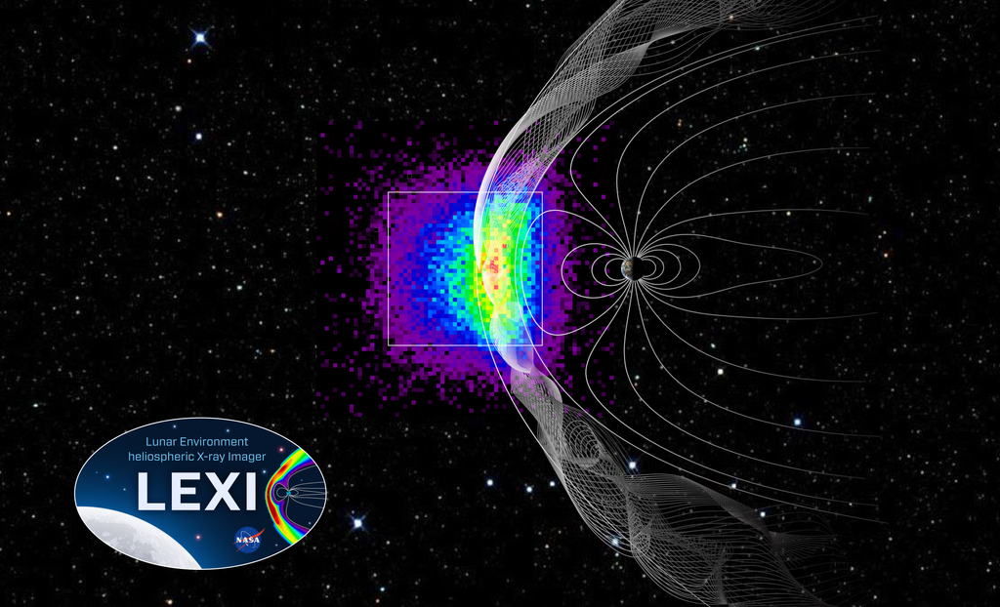

Lunar Environment Heliospheric X-ray Imager (LEXI)

The Lunar Environment Heliospheric X-ray Imager (LEXI) instrument will take global images of the interaction of the solar wind and the Earth’s magnetic field. The instrument will be deployed and operate from the lunar surface in 2025 through the NASA CLPS program. The project is a multi-institute collaboration between Boston University, NASA Goddard Space Flight Center, Johns Hopkins University, University of Miami, University of Kansas, and the University of Leicester in the UK.
More information on the LEXI project details are in the mission paper (Walsh et al., 2024). You can also find the latest updates on the project in the publications page. A list of publications is available to view on the publications page.
If you would like to use LEXI data or collaborate with the LEXI team, you can contact us.